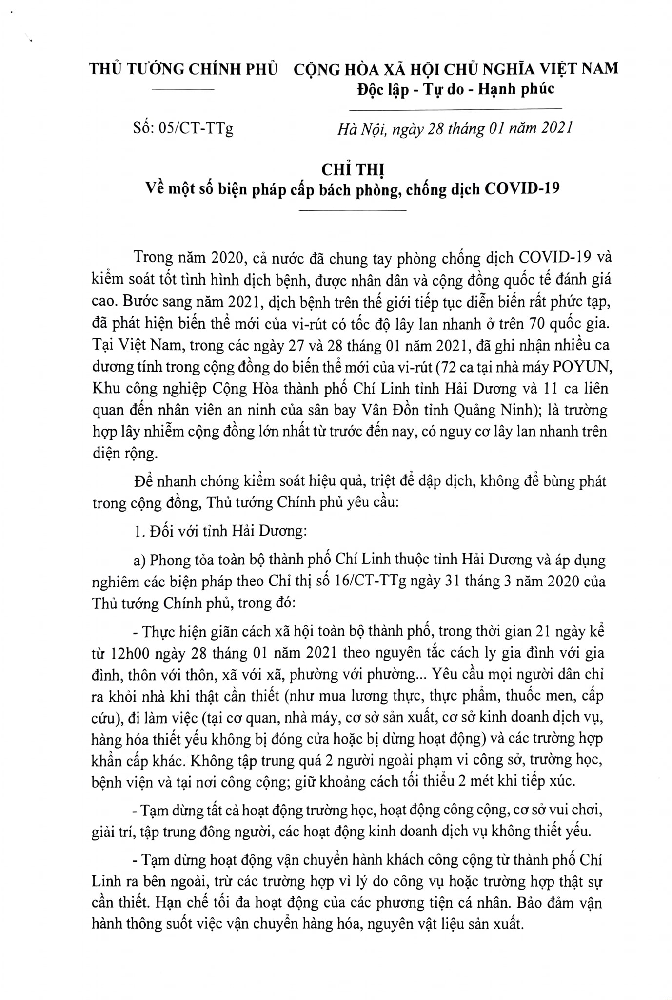

<!DOCTYPE html>
<html lang="en">
<head>
    <meta charset="UTF-8">
    <meta name="viewport" content="width=device-width, initial-scale=1.0">
    <title>Dịch COVID-19: Thủ tướng yêu cầu phong tỏa toàn bộ TP Chí Linh thuộc tỉnh Hải Dương 21 ngày</title>
    <link 
    rel="shortcut icon" 
    href="../images/favicon.png"
    type="image/x-icon">
</head>
<body>
    
</body>
</html>
<h1>
<p>Dịch COVID-19: Thủ tướng yêu cầu</p>
<p>phong tỏa toàn bộ TP Chí Linh thuộc</p>
<p>tỉnh Hải Dương 21 ngày</p>
</h1>
<p><a href="#">Thái Bình</a>- 15:47 28/01/2021 GMT+7</p>
<p><strong>Suckhoedoisong.vn - Ngày 28/1, Thủ tướng Chính phủ đã ban hành Chỉ thị số 05/CT-TTg về một số biện pháp cấp bách phòng chống dịch COVID-19. Theo Chỉ thị, Thủ tướng yêu cầu phong tỏa toàn bộ TP Chí Linh thuộc tỉnh Hải Dương trong thời gian 21 ngày kể từ 12h00 ngày 28/01/2021</strong></p>
<p>Chỉ thị của Thủ tướng nêu rõ, trong năm 2020, cả nước đã chung tay phòng chống dịch COVID-19 và kiểm soát tốt tình hình dịch bệnh, được nhân dân và cộng đồng quốc tế đánh giá cao. Bước sang năm 2021, dịch bệnh trên thế giới tiếp tục diễn biến rất phức tạp, đã phát hiện biến thể mới của vi-rút có tốc độ lây lan nhanh ở trên 70 quốc gia.</p>
<p>Tại Việt Nam, trong các ngày 27 và 28/01/2021, đã ghi nhận nhiều ca dương tính trong cộng đồng do biến thể mới của virút (72 ca tại nhà máy POYUN, Khu công nghiệp Cộng Hòa - TP Chí Linh- Hải Dương và 11 ca liên quan đến nhân viên an ninh của sân bay Vân Đồn tỉnh Quảng Ninh); là trường hợp lây nhiễm cộng đồng lớn nhất từ trước đến nay, có nguy cơ lây lan nhanh trên diện rộng.</p>
<p>Để nhanh chóng kiểm soát hiệu quả, triệt để dập dịch, không để bùng phát trong cộng đồng, Thủ tướng Chính phủ yêu cầu:</p>

<figure>
  

  <figcaption><i>Chỉ thị của Thủ tướng về một số biện pháp cấp bách phòng chống dịch COVID-19</i></figcaption>
</figure>
<p><strong>Đối với tỉnh Hải Dương:</strong>Phong tỏa toàn bộ TP Chí Linh thuộc tỉnh Hải Dương và áp dụng nghiêm các biện pháp theo Chỉ thị số 16/CT-TTg ngày 31/3/ 2020 của Thủ tướng Chính phủ, trong đó: Thực hiện giãn cách xã hội toàn bộ thành phố, trong thời gian 21 ngày kể từ 12h00 ngày 28/01/2021 theo nguyên tắc cách ly gia đình với gia đình, thôn với thôn, xã với xã, phường với phường...

Yêu cầu mọi người dân chỉ ra khỏi nhà khi thật cần thiết (như mua lương thực, thực phẩm, thuốc men, cấp cứu), đi làm việc (tại cơ quan, nhà máy, cơ sở sản xuất, cơ sở kinh doanh dịch vụ, hàng hóa thiết yếu không bị đóng cửa hoặc bị dừng hoạt động) và các trường hợp khẩn cấp khác.

Không tập trung quá 2 người ngoài phạm vi công sở, trường học, bệnh viện và tại nơi công cộng; giữ khoảng cách tối thiểu 2 mét khi tiếp xúc.

Tạm dừng tất cả hoạt động trường học, hoạt động công cộng, cơ sở vui chơi, giải trí, tập trung đông người, các hoạt động kinh doanh dịch vụ không thiết yếu.

Tạm dừng hoạt động vận chuyển hành khách công cộng từ thành phố Chí Linh ra bên ngoài, trừ các trường hợp vì lý do công vụ hoặc trường hợp thật sự cần thiết.

Hạn chế tối đa hoạt động của các phương tiện cá nhân. Bảo đảm vận hành thông suốt việc vận chuyển hàng hóa, nguyên vật liệu sản xuất.

Người đứng đầu các cơ sở sản xuất kinh doanh chịu trách nhiệm về việc thực hiện các biện pháp phòng chống dịch.

Theo Chỉ thị của Thủ tướng, Chủ tịch UBND tỉnh Hải Dương quyết định áp dụng biện pháp đóng cửa, dừng hoạt động các cơ sở không đảm bảo an toàn phòng chống dịch; chỉ đạo truy vết thần tốc, khoanh vùng, dập dịch, xét nghiệm trên diện rộng và thực hiện cách ly tập trung với các trường hợp tiếp xúc gần trong 21 ngày; căn cứ theo mức độ nguy cơ với từng khu vực trên địa bàn, quyết định áp dụng các biện pháp phong tỏa, giãn cách xã hội theo Chỉ thị số 15/CT-TTg ngày 27/3/ 2020 và Chỉ thị số 16/CT-TTg ngày 31/3/2020.
<p><strong>Đối với tỉnh Quảng Ninh:</strong>Tạm dừng hoạt động của Cảng Hàng không quốc tế Vân Đồn kể từ 12h00 ngày 28/01/ 2021;

Chủ tịch UBND tỉnh Quảng Ninh quyết định áp dụng biện pháp đóng cửa, dừng hoạt động các cơ sở không đảm bảo an toàn phòng chống dịch; chỉ đạo truy vết thần tốc, khoanh vùng, dập dịch, xét nghiệm trên diện rộng và thực hiện cách ly tập trung với các trường hợp tiếp xúc gần trong 21 ngày; căn cứ theo mức độ nguy cơ với từng khu vực trên địa bàn, quyết định áp dụng các biện pháp phong tỏa, giãn cách xã hội theo Chỉ thị số 15/CT-TTg ngày 27/3/ 2020 và Chỉ thị số 16/CT-TTg ngày 31 /3 / 2020.</p>
<p><strong>Đối với Chủ tịch Ủy ban nhân dân các tỉnh, thành phố,</strong>Thủ tướng yêu cầu tập trung chỉ đạo: Rà soát, siết chặt việc thực hiện các biện pháp phòng chống dịch trên địa bàn, đặc biệt tại các cơ sở y tế, trường học, khu công nghiệp, nhà máy xí nghiệp, các khu vực thường xuyên có hoạt động tập trung đông người.

Quyết định áp dụng các biện pháp phong tỏa, giãn cách xã hội căn cứ theo mức độ nguy cơ với từng khu vực trên địa bàn.

Yêu cầu người dân thực hiện nghiêm các giải pháp về đeo khẩu trang, hạn chế tụ tập đông người, giữ khoảng cách nơi công cộng.

Tăng cường kiểm tra việc thực hiện các biện pháp phòng, chống dịch, xử lý nghiêm các vi phạm.

Bộ Y tế tập trung nguồn lực, kịp thời hỗ trợ các tỉnh: Quảng Ninh, Hải Dương nhanh chóng dập dịch; chủ động có phương án, kịch bản để xử lý hiệu quả trong tình huống dịch bệnh bùng phát.

Các Bộ: Quốc phòng, Công an, Y tế, Ủy ban nhân dân các tỉnh, thành phố trực thuộc Trung ương tăng cường thực hiện các biện pháp quản lý chặt chẽ hoạt động nhập cảnh, ngăn chặn và xử lý nghiêm các trường hợp nhập cảnh, tổ chức nhập cảnh trái phép.

Các Bộ: Thông tin và Truyền thông, Y tế và các cơ quan thông tấn, báo chí; Ủy ban nhân dân các tỉnh tiếp tục thông tin về tình hình và các biện pháp phòng, chống dịch bệnh để người dân đề cao cảnh giác, không hoang mang với dịch bệnh.</p>
<p><strong>Thái Bình</strong></p>
<p>Menu điều hướng - Navigation</p>
<ul>
    <li><a href="https://google.com">Open Google</a></li>
    <li><a href="home.html">Home Page</a></li>
    <li><a href="contact.html">Contact Page</a></li>
</ul>
